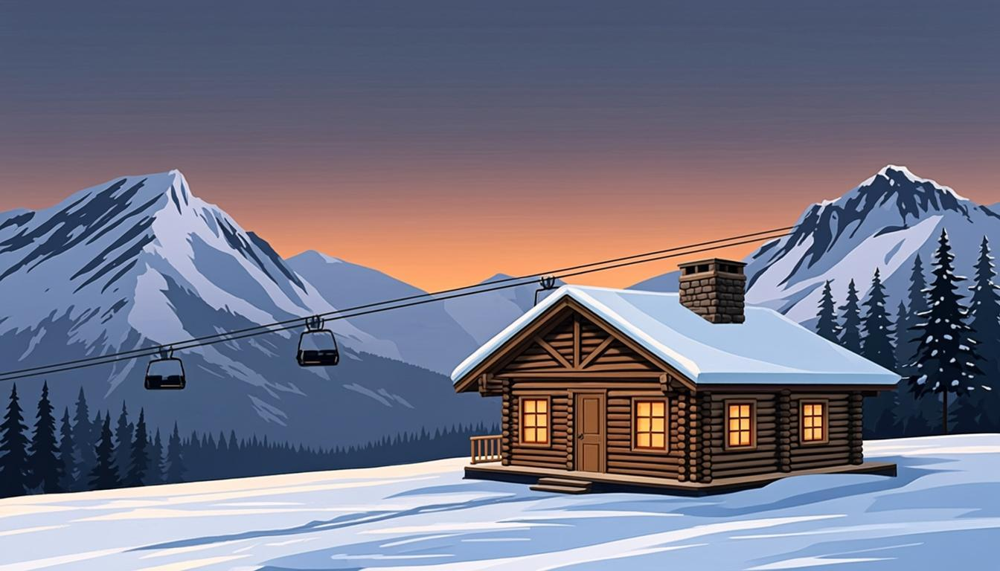

Warm-up
10 minski season · mountains · first snow🎧 Listen to the questions
❓ Three questions — click a card to open the sentence starters
Listening — The Season Opener
12 minaudio + comprehension
🧩 Before you listen: 10 key words
Click a word — a definition and an example will open. The Russian gloss is there to check your understanding. Listen to the recording of all ten words.
🎧 Track 1 — The Season Opener
🌍 Extension — BBC 6 Minute English: Preparing for the Winter Olympics
From the yearly plan: Preparing for the Beijing Winter Olympics ↗
Task: first listen — what were the athletes preparing for? Second listen — note any have done / has been doing phrases and 2 winter-sports words.
Reading — From the Studio Group Chat
8 minchat + adverb spotting#ski-club (and a bit of work)
Dana: I have just booked the lodge. Six places, sauna included. ❄️
Tom: Already? It is only November!
Dana: The good ones disappear by December. Have you finished the QA rehearsal plan yet?
Tom: Almost. I have already written three of five scenarios; the crash-recovery one is still missing.
Priya: Has the art for the winter event been approved yet?
Dana: Not yet. And the trailer is still in editing.
Tom: BTW my new skis have just arrived. 172 cm. 🎿
Priya: Have you actually skied since 2019?
Tom: I have been on the indoor trainer twice this week. Sort of ready.
Dana: The bus leaves on Saturday at six. Don't still be asleep at five past.
Priya: The cats are unaffected. Pixel has already claimed the warm router again.
🌍 Extension — FIS Ski: the season so far
From the yearly plan — pick a news item about one athlete: fis-ski.com ↗
Retell in 4 sentences: what has the athlete achieved this season, and what happened at the last race?
Grammar — just / already / yet / still · for / since
15 minrules + 4 exercisesJUST · ALREADY · YET · STILL
- just = a moment ago (affirmative, mid-position): We have just frozen the scope.
- already = sooner than expected (affirmative & questions): Tom has already packed his gear.
- yet = expected but not done (negatives & questions, end): I haven't packed yet. Have you checked the weather yet?
- still = continuing, often a surprise or complaint (mid-position): The red slope is still closed.
FOR · SINCE — the two anchors
- for + a period: I have been skiing for twenty years. We haven't met for ages.
- since + a starting point: I have been skiing since childhood. The studio has existed since 2021.
- Trap: I am here since May ✗ → I have been here since May ✓
⚙️ Mini-table — where does the little word stand?
| Sentence | Why? |
|---|---|
| Dana has just booked the lodge. | A moment ago, between has and V3 → just. |
| Tom has already packed his gear. | Sooner than expected, mid-position → already. |
| Priya hasn't bought her lift pass yet. | Negative, expected but not done, end → yet. |
| The red slope is still closed. | Continuing despite the time, before the word it changes → still. |
| Has the art been approved yet? | Question with an expected yes → yet at the end. |
| I have been on the trainer twice this week. | No little word needed — a counted result is enough. |
🎬 Video — BBC 6 Minute Grammar: just, already and yet (6 min)
🔊 Shadowing — speak along with the speaker
Track A — the quick wins (just / already), Track B — the waiting room (yet / still / for / since). Listen to a sentence → repeat it out loud in the pause. Two loops per track.
Grammar → Speaking — the main section of the lesson
10 mingoal: all four words in one update🎙 Round 1 — Status Update all four words mandatory
Give a 60-second winter-project update. Requirement: use all four — just, already, yet, still. Example: We have just frozen the scope; the art is still not approved, the trailer isn't ready yet, but we have already tested the menu flow. 90 seconds.
🎙 Round 2 — Mountain Story for + since + the season
Tell your season-prep story: how long you have been skiing (or wanting to), what you have just bought, what you haven't booked yet. Requirement: 2 sentences with since/for and 2 with just/already/yet/still. 120 seconds.
🩹 Round 3 — Correction Sprint (studio chat edition)
Five messages that went out with mistakes. Correct each one out loud and explain why. Click a card to see the fix.
⚡ Speed Drill — one little word per card
Open a card and instantly build a true sentence about your work or season with that word. Watch the position!
Writing — done and not done
5 min50–90 wordsModel answer — open it after your own version
Status, Friday. I have just sent the regression checklist to the team. The two oldest test cases still fail, but I have already rewritten the repro steps. The new training level isn't merged yet — the build has been red since Tuesday. I haven't heard back from Tom about the review yet, and the course homework is still open in another tab. For the record: I have been keeping this status format since October, and it works.
Homework
≤ 30 minutes in total🧑🏫 Teacher notes
Goal: the student places just/already/yet/still correctly inside Perfect sentences and never says since + period again; the words feel like status-report tools, not abstract grammar.
Suggested flow: Warm-up: ski questions; ask "sooner than expected, or still waiting?" after each answer → Listening: the season opener; collect all four words with their positions → Reading: the chat is full of the target words; the student finds them before the exercises → Grammar: the position rule is the heart → Speaking: Round 1 forces all four words in one minute.
Success criteria: Round 1 — all four words, correct positions; Round 2 — 2 × since/for + 2 little words; Round 3 — 5 corrections with reasons.
Error pocket: since + period · Did you already…? · yet before the verb in negatives · still and yet together in one clause.
Threads: the ski-club chat returns in the Lesson 12 challenge (the student tells her own season story); the "status update" round becomes the weekly ritual from Module 4 on; the trailer that is still in editing appears in Module 4 (planning the release).